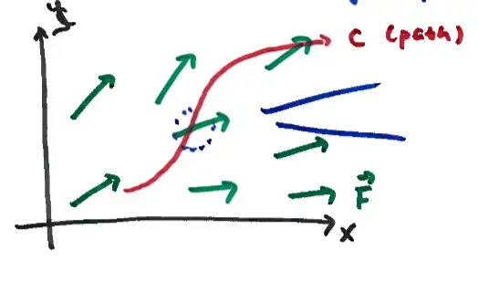
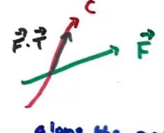

17.2 Line Integrals in a Vector Field
last time: line integral of scalar field \(\int_{C} f(x,y) ds\)
In a vector field, we evaluate / accumulate some component of the vector field along a path \(C\).
The diagram illustrates a path \(C\) (red curve) moving through a vector field \(\vec{F}\) (green arrows). At any point along the path, we consider the interaction between the field and the direction of travel.

Along the path, we look at the dot product \(\vec{F} \cdot \vec{T}\), where \(\vec{T}\) is the unit tangent vector of the path.

\(\vec{F} \cdot \vec{T}\) is scalar, so the calculation of
\[ \int_{C} \vec{F} \cdot \vec{T} ds \]
is done just like with \(\int_{C} f(x,y) ds\).